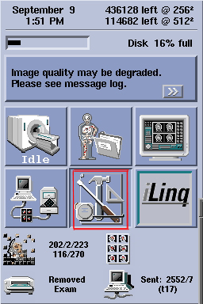
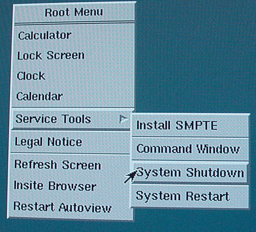
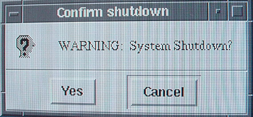
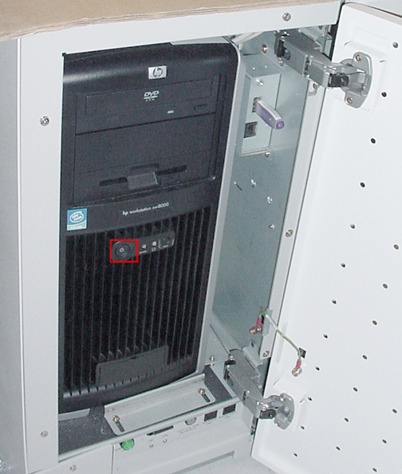
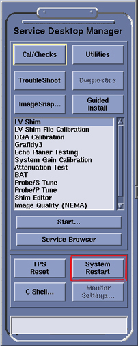
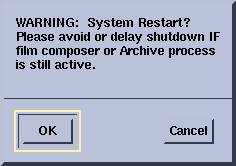
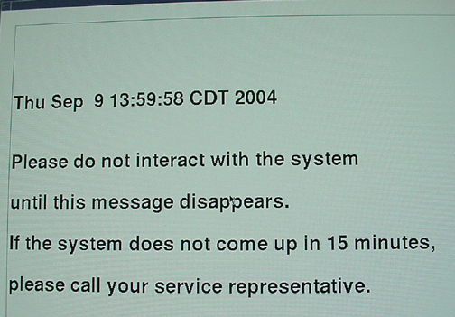

Operating Documentation
Direction 5440000, Rev# 5
Signa HDxt Service Methods
Module Version 1.0, Version Date 4/27/07
Operating Documentation |
| Required Persons | Preliminary Reqs | Procedure | Finalization |
|---|---|---|---|
| 1 | Not Applicable | Not Applicable | Not Applicable |
This procedure covers three items concerning the starting and stopping the Signa software:
| Last Update | 13 -Sept- 04 |
| ||||
| THERE CAN BE EQUIPMENT DAMAGE IF SHUT DOWN PROCEDURE IS NOT FOLLOWED. COLD BOOTING CAN CAUSE IRREPARABLE DATA LOSSES. ENSURE THAT YOU HAVE SYSTEMATICALLY SHUT DOWN THE MACHINE. | ||||
| NOTE: | Follow these steps in the exact order to shutdown the machine |
Right-click the mouse on your service desktop. See Illustration 1
Illustration 1: Service Desktop

Right click with the mouse to Open the Root Menu. Select Service Tools > System shutdown. See Illustration 2
Illustration 2: System Shutdown Menu

You will now see a pop-up asking you to confirm shutdown. Click on “[Yes]” if you want to shutdown. See Illustration 3
Illustration 3: Confirm Shutdown

The system will close all processing and automatically turns off the power to the computer.
To bring the system up from a power down condition, press the Power button on the CPU. See Illustration 4
Illustration 4: CPU Power Switch

Boot the software as shown in System Restart.
Go to the Service Desktop, see Illustration 1.
Click on the [System Restart] button from the service desktop manager. See Illustration 5
Illustration 5: System Restart

You will now see a pop-up which prompts you to confirm the restart. Click on [YES] to confirm. See Illustration 6
Illustration 6: System Restart Pop-up

The system will now restart, which will take approximately 10 minutes to complete.
As the software restarts, it will stop on a login screen. To bring the scanner up to Signa scanning level, the login default is:
Login: Signa<Enter>
Password: adw2.0<Enter>
See Illustration 7.
Illustration 7: Service Desktop- Login Screen

As it comes back to Signa, a window prompts you to approach the service representative if the system is not activated. See Illustration 8. If you do not see the system restarting in few minutes, please contact your service representative.
Illustration 8: System Restart Screen

No finalization steps.